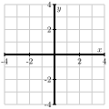
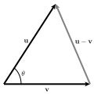
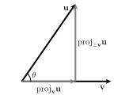
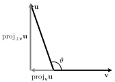
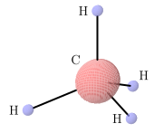

How is the dot product of two vectors defined and what geometric information does it tell us?
How can we tell if two vectors in \(\R^n\) are perpendicular?
How do we find the projection of one vector onto another?
In the last section, we considered vector addition and scalar multiplication and found that each operation had a natural geometric interpretation. In this section, we will introduce a means of multiplying vectors.
Preview Activity9.3.1.
For two-dimensional vectors \(\vu=\langle u_1,u_2\rangle\) and \(\vv=\langle v_1, v_2\rangle\text{,}\) the dot product is simply the scalar obtained by
If \(\vu=\langle 3, 4\rangle\) and \(\vv=\langle -2, 1\rangle\text{,}\) find the dot product \(\vu\cdot\vv\text{.}\)
Find \(\vi\cdot\vi\) and \(\vi\cdot\vj\text{.}\)
If \(\vu=\langle 3, 4\rangle\text{,}\) find \(\vu\cdot\vu\text{.}\) How is this related to \(|\vu|\text{?}\)
On the axes in Figure 9.3.1, plot the vectors \(\vu=\langle 1, 3\rangle\) and \(\vv=\langle -3, 1\rangle\text{.}\) Then, find \(\vu\cdot\vv\text{.}\) What is the angle between these vectors?

Figure9.3.1.For part (d)
On the axes in Figure 9.3.2, plot the vector \(\vu=\langle 1, 3\rangle\text{.}\)Figure9.3.2.For part (e) For each of the following vectors \(\vv\text{,}\) plot the vector on Figure 9.3.2 and then compute the dot product \(\vu\cdot\vv\text{.}\)
\(\vv=\langle 3, 2 \rangle\text{.}\)
\(\vv=\langle 3, 0 \rangle\text{.}\)
\(\vv=\langle 3,-1 \rangle\text{.}\)
\(\vv=\langle 3,-2 \rangle\text{.}\)
\(\vv=\langle 3,-4 \rangle\text{.}\)
Based upon the previous part of this activity, what do you think is the sign of the dot product in the following three cases shown in Figure 9.3.3? Figure9.3.3.For part (f)
Subsection9.3.1The Dot Product
The definition of the dot product for vectors in \(\R^2\) given in Preview Activity 9.3.1 can be extended to vectors in \(\R^n\text{.}\)
Definition9.3.4.
The dot product of vectors \(\vu=\langle u_1, u_2,\ldots,u_n\rangle\) and \(\vv=\langle v_1, v_2,\ldots,v_n\rangle\) in \(\R^n\) is the scalar
(As we will see shortly, the dot product arises in physics to calculate the work done by a vector force in a given direction. It might be more natural to define the dot product in this context, but it is more convenient from a mathematical perspective to define the dot product algebraically and then view work as an application of this definition.)
The dot product is a natural way to define a product of two vectors. In addition, it behaves in ways that are similar to the product of, say, real numbers.
Properties of the dot product.
Let \(\vu\text{,}\)\(\vv\text{,}\) and \(\vw\) be vectors in \(\R^n\text{.}\) Then
\(\vu \cdot \vv = \vv \cdot \vu\) (the dot product is commutative), and
if \(c\) is a scalar, then \((c\vu) \cdot \vw = c(\vu \cdot
\vw)\text{.}\)
Moreover, the dot product gives us valuable geometric information about the vectors and their relative orientation. For instance, let's consider what happens when we dot a vector with itself:
In other words, the dot product of a vector with itself gives the square of the length of the vector: \(\vu\cdot\vu=|\vu|^2\text{.}\)
Subsection9.3.2The angle between vectors
The dot product can help us understand the angle between two vectors. For instance, if we are given two vectors \(\vu\) and \(\vv\text{,}\) there are two angles that these vectors create, as depicted at left in Figure 9.3.5. We will call \(\theta\text{,}\) the smaller of these angles, the angle between these vectors. Notice that \(\theta\) lies between 0 and \(\pi\text{.}\)

Figure9.3.5.Left: The angle between \(\vu\) and \(\vv\text{.}\) Right: The triangle formed by \(\vu\text{,}\)\(\vv\text{,}\) and \(\vu-\vv\text{.}\)
To determine this angle, we may apply the Law of Cosines to the triangle shown at right in Figure 9.3.5.
Using the fact that the dot product of a vector with itself gives us the square of its length, together with the properties of the dot product, we find:
The real beauty of this expression is this: the dot product is a very simple algebraic operation to perform yet it provides us with important geometric information — namely the angle between the vectors — that would be difficult to determine otherwise.
Activity9.3.3.
Determine each of the following.
The length of the vector \(\vu=\langle 1,2,-3\rangle\) using the dot product.
The angle between the vectors \(\vu =\langle 1, 2 \rangle\) and \(\vv = \langle 4, -1 \rangle\) to the nearest tenth of a degree.
The angle between the vectors \(\vy =\langle 1, 2, -3 \rangle\) and \(\vz = \langle -2, 1, 1 \rangle\) to the nearest tenth of a degree.
If the angle between the vectors \(\vu\) and \(\vv\) is a right angle, what does the expression \(\vu\cdot\vv=|\vu||\vv|\cos(\theta)\) say about their dot product?
If the angle between the vectors \(\vu\) and \(\vv\) is acute—that is, less than \(\pi/2\)—what does the expression \(\vu\cdot\vv=|\vu||\vv|\cos(\theta)\) say about their dot product?
If the angle between the vectors \(\vu\) and \(\vv\) is obtuse—that is, greater than \(\pi/2\)—what does the expression \(\vu\cdot\vv=|\vu||\vv|\cos(\theta)\) say about their dot product?
Subsection9.3.3The Dot Product and Orthogonality
When the angle between two vectors is a right angle, it is frequently the case that something important is happening. In this case, we say the vectors are orthogonal. For instance, orthogonality often plays a role in optimization problems; to determine the shortest path from a point in \(\R^3\) to a given plane, we move along a line orthogonal to the plane.
As Activity 9.3.3 indicates, the dot product provides a simple means to determine whether two vectors are orthogonal to one another. In this case, \(\vu\cdot\vv=|\vu||\vv|\cos(\pi/2) = 0\text{,}\) so we make the following important observation.
The dot product and orthogonality.
Two vectors \(\vu\) and \(\vv\) in \(\R^n\) are orthogonal to each other if \(\vu \cdot \vv = 0\text{.}\)
More generally, the sign of the dot product gives us useful information about the relative orientation of the vectors. If we remember that
\begin{align*}
\cos(\theta) \gt 0 \mathstrut \amp \ \ \ \text{ if } \theta \text{ is an acute angle,}\\
\cos(\theta) = 0 \mathstrut \amp \ \ \ \text{ if } \theta \text{ is a right angle, and}\\
\cos(\theta) \lt 0 \mathstrut \amp \ \ \ \text{ if } \theta \text{ is an obtuse angle,}
\end{align*}
we see that for nonzero vectors \(\vu\) and \(\vv\text{,}\)
\begin{align*}
\vu\cdot\vv \gt 0 \mathstrut \amp \ \ \ \text{ if } \theta \text{ is an acute angle,}\\
\vu\cdot\vv = 0 \mathstrut \amp \ \ \ \text{ if }
\theta \text{ is a right angle, and}\\
\vu\cdot\vv \lt 0 \mathstrut \amp \ \ \ \text{ if }
\theta \text{ is an obtuse angle.}
\end{align*}
In physics, work is a measure of the energy required to apply a force to an object through a displacement. For instance, Figure 9.3.7 shows a force \(\vF\) displacing an object from point \(A\) to point \(B\text{.}\) The displacement is then represented by the vector \(\overrightarrow{AB}\text{.}\)
Figure9.3.7.A force \(\vF\) displacing an object.
It turns out that the work required to displace the object is
\begin{equation*}
W = \vF\cdot\overrightarrow{AB} = |\vF||\overrightarrow{AB}|\cos(\theta).
\end{equation*}
This means that the work is determined only by the magnitude of the force applied parallel to the displacement. Consequently, if we are given two vectors \(\vu\) and \(\vv\text{,}\) we would like to write \(\vu\) as a sum of two vectors, one of which is parallel to \(\vv\) and one of which is orthogonal to \(\vv\text{.}\) We take up this task after the next activity.
Activity9.3.4.
Determine the work done by a 25 pound force acting at a \(30^{\circ}\) angle to the direction of the object's motion, if the object is pulled 10 feet. In addition, is more work or less work done if the angle to the direction of the object's motion is \(60^\circ\text{?}\)
Subsection9.3.5Projections


Figure9.3.8.Left: \(\proj_{\vv} \vu\text{.}\) Right: \(\proj_{\vv} \vu\) when \(\theta > \frac\pi2\text{.}\)
Suppose we are given two vectors \(\vu\) and \(\vv\) as shown at left in Figure 9.3.8. Motivated by our discussion of work, we would like to write \(\vu\) as a sum of two vectors, one of which is parallel to \(\vv\) and one of which is orthogonal. That is, we would like to write
where \(\proj_{\vv}\vu\) is parallel to \(\vv\) and \(\proj_{\perp\vv}\vu\) is orthogonal to \(\vv\text{.}\) We call the vector \(\proj_{\vv}\vu\) the projection of \(\vu\) onto \(\vv\). Note that, as the diagram at right in Figure 9.3.8 illustrates, it is also possible to create a projection even if the angle between the vectors \(\vu\) and \(\vv\) exceeds \(\frac\pi2\text{.}\)
To find the vector \(\proj_{\vv} \vu\text{,}\) we will dot both sides of Equation (9.3.2) with the vector \(\vv\text{,}\) to find that
Notice that \((\proj_{\perp\vv}\vu)\cdot\vv = 0\) since \(\proj_{\perp\vv}\vu\) is orthogonal to \(\vv\text{.}\) Also, \(\proj_{\vv}\vu\) must be a scalar multiple of \(\vv\) since it is parallel to \(\vv\text{,}\) so we will write \(\proj_{\vv}\vu = s\vv\text{.}\) It follows that
It is sometimes useful to write \(\proj_{\vv}\vu\) as a scalar times a unit vector in the direction of \(\vv\text{.}\) We call this scalar the component of \(\vu\) along \(\vv\) and denote it as \(\comp_{\vv}\vu\text{.}\) We therefore have
This shows that once we have computed \(\proj_{\vv} \vu\text{,}\) we can find \(\proj_{\perp \vv} \vu\) simply by calculating the difference of two known vectors.
Activity9.3.5.
Let \(\vu = \langle 2, 6 \rangle\text{.}\)
Let \(\vv = \langle 4, -8 \rangle\text{.}\) Find \(\comp_{\vv} \vu\text{,}\)\(\proj_{\vv} \vu\) and \(\proj_{\perp \vv} \vu\text{,}\) and draw a picture to illustrate. Finally, express \(\vu\) as the sum of two vectors where one is parallel to \(\vv\) and the other is perpendicular to \(\vv\text{.}\)
Now let \(\vv = \langle -2,4 \rangle \text{.}\) Without doing any calculations, find \(\proj_{\vv} \vu\text{.}\) Explain your reasoning. (Hint: Refer to the picture you drew in part (a).)
Find a vector \(\vw\) not parallel to \(\vz = \langle 3,4 \rangle \) such that \(\proj_{\vz} \vw\) has length \(10\text{.}\) Note that there are infinitely many different answers.
Subsection9.3.6Summary
The dot product of two vectors in \(\R^n\text{,}\)\(\vu = \langle u_1,
u_2, \ldots, u_n \rangle\) and \(\vv = \langle v_1, v_2, \ldots, v_n
\rangle\text{,}\) is the scalar
where \(\theta\) is the angle between \(\vu\) and \(\vv\text{.}\)
Two vectors are orthogonal if the angle between them is \(\pi/2\text{.}\) In terms of the dot product, the vectors \(\vu\) and \(\vv\) are orthogonal if and only if \(\vu \cdot \vv = 0\text{.}\)
The projection of a vector \(\vu\) in \(\R^n\) onto a vector \(\vv\) in \(\R^n\) is the vector
\(\mathbf a = \langle 0, 5, -4 \rangle\) and \(\mathbf b = \langle -2, 0, 3 \rangle\)
\(\mathbf a \cdot \mathbf b =\)
Is the angle between the vectors "acute", "obtuse" or "right"?
2.
Determine if the pairs of vectors below are "parallel", "orthogonal", or "neither".
\(\mathbf a = \langle 2, 2, -5 \rangle\) and \(\mathbf b = \langle -6, -6, -24/5 \rangle\) are
\(\mathbf a = \langle 2, 2, -5 \rangle\) and \(\mathbf b = \langle -6, -6, 15 \rangle\) are
\(\mathbf a = \langle 2, 2, -5 \rangle\) and \(\mathbf b = \langle 6, 6, -14 \rangle\) are
3.
Perform the following operations on the vectors \(\vec{u} = \left\lt 3,-2,5\right>\text{,}\)\(\vec{v} = \left\lt 3,0,3\right>\text{,}\) and \(\vec{w} = \left\lt -1,-2,-3\right>\text{.}\)
Find \({ \mathbf a \cdot \mathbf b }\) if \(\left| {\mathbf a} \right|\) = 9, \(\left| {\mathbf b} \right|\) = 10, and the angle between \({\mathbf a}\) and \({\mathbf b}\) is \(- \frac{\pi}{3}\) radians.
\({ \mathbf a \cdot \mathbf b }\) =
5.
What is the angle in radians between the vectors
\({\mathbf a}\) = (10, 2, 6) and
\({\mathbf b}\) = (-6, -1, 6)?
Angle: (radians)
6.
Find \({ \mathbf a \cdot \mathbf b }\) if \(\left| {\mathbf a} \right|\) = 1, \(\left| {\mathbf b} \right|\) = 3, and the angle between \({\mathbf a}\) and \({\mathbf b}\) is \(- \frac{\pi}{7}\) radians.
\({ \mathbf a \cdot \mathbf b }\) =
7.
A constant force \({\mathbf F} = -6 {\mathbf i} + 8 {\mathbf j} + 3 {\mathbf k}\) moves an object along a straight line from point \((3, -2, 5)\) to point \((5, 10, -3)\text{.}\)
Find the work done if the distance is measured in meters and the magnitude of the force is measured in newtons.
Work: Nm
8.
A woman exerts a horizontal force of 4 pounds on a box as she pushes it up a ramp that is 6 feet long and inclined at an angle of 30 degrees above the horizontal.
Find the work done on the box.
Work: ft-lb
9.
If Yoda says to Luke Skywalker, “The Force be with you,” then the dot product of the Force and Luke should be:
negative
zero
positive
any real number
10.
Find the angle between the diagonal of a cube of side length 12 and the diagonal of one of its faces. The angle should be measured in radians.
11.
Let \(\vv = \langle -2, 5 \rangle\) in \(\R^2\text{,}\) and let \(\vy = \langle 0, 3, -2 \rangle\) in \(\R^3\text{.}\)
Is \(\langle 2, -1 \rangle\) perpendicular to \(\vv\text{?}\) Why or why not?
Find a unit vector \(\vu\) in \(\R^2\) such that \(\vu\) is perpendicular to \(\vv\text{.}\) How many such vectors are there? Justify your answers.
Is \(\langle 2, -1, -2 \rangle\) perpendicular to \(\vy\text{?}\) Why or why not?
Find a unit vector \(\vw\) in \(\R^3\) such that \(\vw\) is perpendicular to \(\vy\text{.}\) How many such vectors are there?Justify your answers.
Let \(\vz = \langle 2, 1, 0 \rangle\text{.}\) Find a unit vector \(\vr\) in \(\R^3\) such that \(\vr\) is perpendicular to both \(\vy\) and \(\vz\text{.}\) How many such vectors are there? Explain your process.
12.
Consider the triangle in \(\R^3\) given by \(P=(3, 2, -1)\text{,}\)\(Q=(1, -2, 4)\text{,}\) and \(R=(4, 4, 0)\text{.}\)
Find the measure of each of the three angles in the triangle, accurate to \(0.01\) degrees.
Choose two sides of the triangle, and call the vectors that form the sides (emanating from a common point) \(\va\) and \(\vb\text{.}\)
Compute \(\proj_{\vb} \va\text{,}\) and \(\proj_{\perp \vb} \va\text{.}\)
Explain why \(\proj_{\perp \vb} \va\) can be considered a height of triangle \(PQR\text{.}\)
Find the area of the given triangle.
13.
Let \(\vu\) and \(\vv\) be vectors in \(\R^5\) with \(\vu \cdot \vv = -1\text{,}\)\(| \vu | = 2\text{,}\)\(| \vv | = 3\text{.}\) Use the properties of the dot product to find each of the following.
\(\displaystyle \vu \cdot 2\vv\)
\(\displaystyle \vv \cdot \vv\)
\(\displaystyle (\vu + \vv) \cdot \vv\)
\(\displaystyle (2\vu+4\vv) \cdot (\vu - 7\vv)\)
\(|\vu| |\vv| \cos(\theta)\text{,}\) where \(\theta\) is the angle between \(\vu\) and \(\vv\)
\(\displaystyle \theta\)
14.
One of the properties of the dot product is that \((\vu+\vv) \cdot \vw = (\vu \cdot \vw) + (\vv \cdot \vw)\text{.}\) That is, the dot product distributes over vector addition on the right. Here we investigate whether the dot product distributes over vector addition on the left.
Let \(\vu = \langle 1,2,-1 \rangle\text{,}\)\(\vv = \langle 4,-3,6 \rangle\text{,}\) and \(\vw = \langle 4,7,2 \rangle\text{.}\) Calculate
for any vectors \(\vx\text{,}\)\(\vy\text{,}\) and \(\vz\) in \(\R^n\text{.}\)
15.
When running a sprint, the racers may be aided or slowed by the wind. The wind assistance is a measure of the wind speed that is helping push the runners down the track. It is much easier to run a very fast race if the wind is blowing hard in the direction of the race. So that world records aren't dependent on the weather conditions, times are only recorded as record times if the wind aiding the runners is less than or equal to 2 meters per second. Wind speed for a race is recorded by a wind gauge that is set up close to the track. It is important to note, however, that weather is not always as cooperative as we might like. The wind does not always blow exactly in the direction of the track, so the gauge must account for the angle the wind makes with the track. Suppose a 4 mile per hour wind is blowing to aid runners by making a \(38^{\circ}\) angle with the race track. Determine if any times set during such a race would qualify as records.
16.
Molecular geometry is the geometry determined by arrangements of atoms in molecules. Molecular geometry includes measurements like bond angle, bond length, and torsional angles. These attributes influence several properties of molecules, such as reactivity, color, and polarity.
Figure9.3.9.A methane molecule.
As an example of the molecular geometry of a molecule, consider the methane \(\text{CH}_4\) molecule, as illustrated in Figure 9.3.9. According to the Valence Shell Electron Repulsion (VSEPR) model, atoms that surround single different atoms do so in a way that positions them as far apart as possible. This means that the hydrogen atoms in the methane molecule arrange themselves at the vertices of a regular tetrahedron. The bond angle for methane is the angle determined by two consecutive hydrogen atoms and the central carbon atom. To determine the bond angle for methane, we can place the center carbon atom at the point \(\left(\frac{1}{2}, \frac{1}{2}, \frac{1}{2} \right)\) and the hydrogen atoms at the points \((0,0,0)\text{,}\)\((1,1,0)\text{,}\)\((1,0,1)\text{,}\) and \((0,1,1)\text{.}\) Find the bond angle for methane to the nearest tenth of a degree.